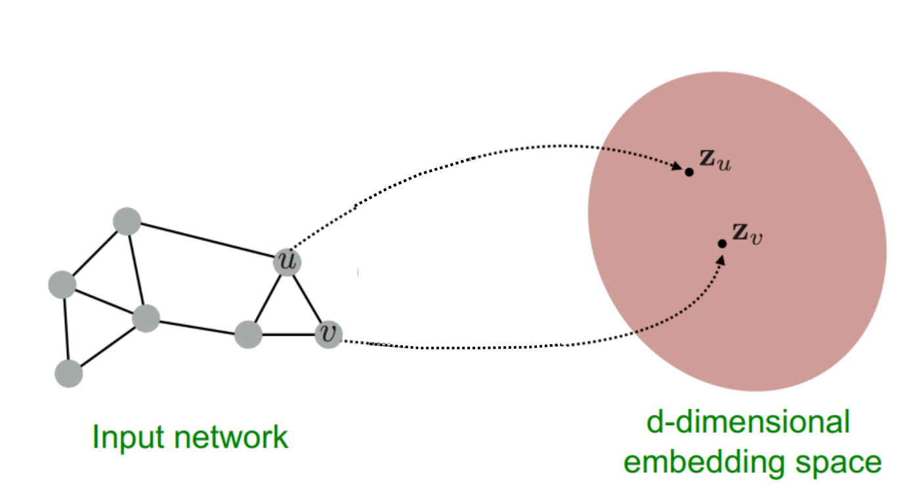
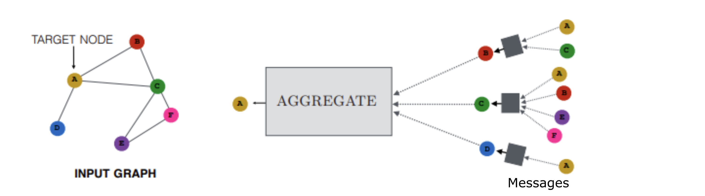
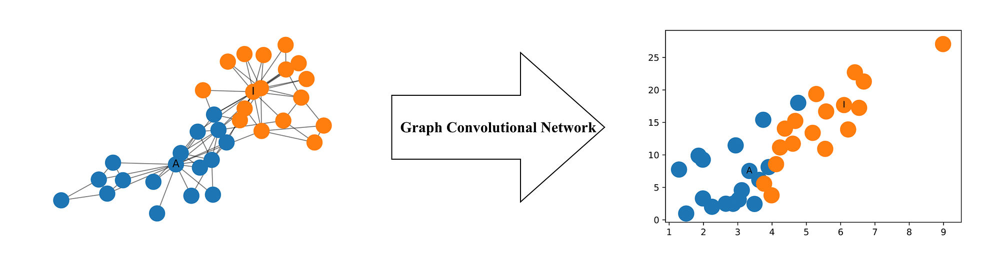
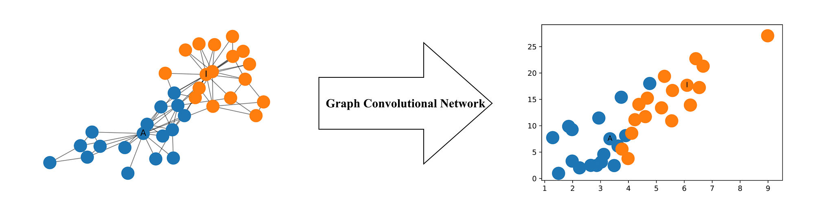
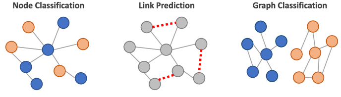

Section 3 - SNF + GNN’s#
Introduction to Graph Neural Networks#
Graph Neural Networks (GNN) are a powerful architecture for the learning of graph structure and information in a supervised setting. In this workshop we will implement a Graph Convolutional Network (GCN) model from the Deep Graph Library in Python.
The goal of GNN’s is to learn an embedding space for nodes which captures both node feature representation and graph structure. Intuitively, if two nodes are connected and belong to the same class they should be close together in the embedding space. Conversely, if two nodes are connected but do not belong to the same class we want them to be separated in the embedding space. Thus, we cannot rely on graph structure alone and necessitates the requirement to include node feature representation also. The method in which we capture this similarity is through the message passing algorithm discussed below.
{kind=link}
The differentiation between GCN and neural network architectures is their ability to learn from the local neighbourhood as opposed to handcrafted network features. The performance of GCN and other GNN architectures has been demonstrated on a variety of benchmark tasks, hence extending their application to a biomedical setting is an exciting avenue.
Message Passing in GNN’s#
Message passing is the method of information exchange among nodes. It is performed so that similar nodes are mapped to similar embedding spaces during the learning phase of the GNN. i.e. if A, D and B are cancer patients, we want D and B to exchange this information with A, but we want C to exchange the information that it is not a cancer patient. In doing so, A will see that it is connected to 2 cancer patients and 1 non cancer patient thus, learning that it is more likely also a cancer patient.
{kind=link}
The message passing algorithm consists of three core steps : Propagation, Aggregation and Update. For a single node “u”, the hidden embedding $h(k)_u$ can be formulated as per the general equation, where $N(u)$ is the neighbourhood of u.

Propagation#
The first step of message passing simply involves gathering all embeddings $h(k)_v$ for every node u. During this step it is common to apply an augmentation. In a GCN this augmentation is a Multi Layer Perceptron of arbitrary dimension. In this manner each node receives a single augmented message from its neighbours.
It is important to note that this step makes GNN’s invariant to the order of the nodes. i.e. it does not matter if the message ordering to A is D, B, C or B, C, D. As we perform an augmentation on a set of node embeddings, the GNN is unaffected by permutations to the ordering.
Aggregation#
The method of node aggregation is a significant differentiator between different GNN architecture. For example, GCN’s employ mean pooling whereas, GraphSage employs max-pooling. The aggregation step summarises the information received from the other nodes.
Update#
Finally, the node updates its embedding position based on the new information it has gathered from its neighbouring nodes.
Graph Convolutional Network (GCN)#
In this workshop we will work exclusively with the GCN model shown below. The GCN uses Multi Layer Perceptron linear layers for message augmentation and propagation, element-wise mean pooling and intermediate ReLU non-linearity for aggregation. GCN’s require the full network to be present during training and use a semi supervised approach for learning from network and data structures.
 

{kind=link}
GNN Task : Node Classification#
Node classification in GNNs is a task where the goal is to predict the label or class of individual nodes in a graph based on their features and the structure of the graph. We have introduced the concept of using message passing to generate node embeddings. These embeddings can be used for edge predictions (prediciting missing edges), graph classification (predicting label based on graph structure) or as is our case node classification. In node classification a classifier (often a simple linear layer) is trained to predict the node’s class based on its embedding. This approach allows for the prediction of node classes even in the presence of complex and non-Euclidean graph structures.
{kind=link}
Deep Graph Library (DGL)#
DGL is a framework agnostic library of GNN architectures. In this tutorial we will work with a PyTorch implementation but Tensorflow and Apache MXNet are also supported. Our use of DGL will be limited to the implementation of GCN, in particular the GraphConv function. We encourage you to interact further with the DGL library and explore some of their tutorials and other model architecutres
Generation Scotland Dataset#
Generation Scotland is a research study looking at the health and well-being of volunteers and their families. Volunteers answer questionnaires and provide samples for genetic testing. These are combined with NHS health records and innovative laboratory science to create a rich evidence base for understanding health.
Generation Scotland has been recruiting volunteers since 2006, with over 24000 participants from around 7000 families joined. The goal of Generation Scotland is to improve the health and well-being of current and future generations through partnership between researchers and volunteers. So far, research papers into COVID-19, cancer, diabetes, depression, dementia and more have been published. See the Generation Scotland website for more information.
In this section we will use a subset of the dataset consisting of 2733 participants. We will use DNA Methylation from these participants to predict if they are “Smokers” or “non-Smokers”. The data used is anonymous with normally distributed jitter added to the phenotypes to further preserve anonymity while maintaining the overall data distribution.